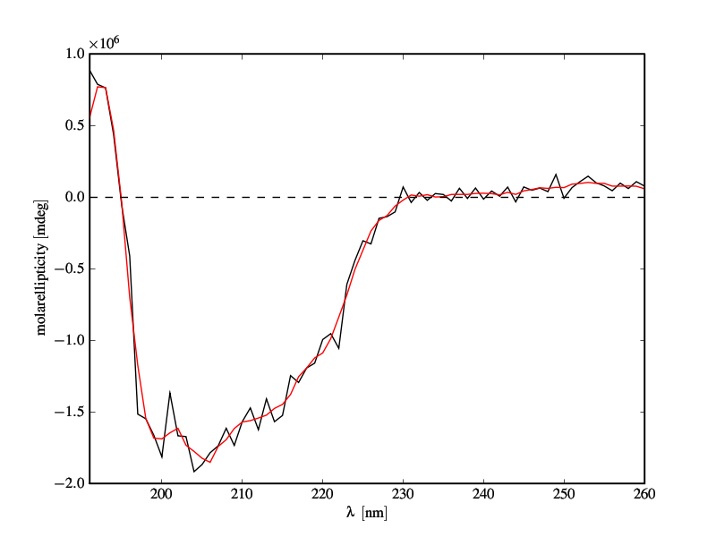

Savitzky Golay Filtering¶
The Savitzky Golay filter is a particular type of low-pass filter, well adapted for data smoothing. For further information see: http://www.wire.tu-bs.de/OLDWEB/mameyer/cmr/savgol.pdf (or http://www.dalkescientific.com/writings/NBN/data/savitzky_golay.py for a pre-numpy implementation).
Sample Code¶
#!python
def savitzky_golay(y, window_size, order, deriv=0, rate=1):
r"""Smooth (and optionally differentiate) data with a Savitzky-Golay filter.
The Savitzky-Golay filter removes high frequency noise from data.
It has the advantage of preserving the original shape and
features of the signal better than other types of filtering
approaches, such as moving averages techniques.
Parameters
----------
y : array_like, shape (N,)
the values of the time history of the signal.
window_size : int
the length of the window. Must be an odd integer number.
order : int
the order of the polynomial used in the filtering.
Must be less then `window_size` - 1.
deriv: int
the order of the derivative to compute (default = 0 means only smoothing
)
Returns
-------
ys : ndarray, shape (N)
the smoothed signal (or it's n-th derivative).
Notes
-----
The Savitzky-Golay is a type of low-pass filter, particularly
suited for smoothing noisy data. The main idea behind this
approach is to make for each point a least-square fit with a
polynomial of high order over a odd-sized window centered at
the point.
Examples
--------
t = np.linspace(-4, 4, 500)
y = np.exp( -t**2 ) + np.random.normal(0, 0.05, t.shape)
ysg = savitzky_golay(y, window_size=31, order=4)
import matplotlib.pyplot as plt
plt.plot(t, y, label='Noisy signal')
plt.plot(t, np.exp(-t**2), 'k', lw=1.5, label='Original signal')
plt.plot(t, ysg, 'r', label='Filtered signal')
plt.legend()
plt.show()
References
----------
.. [1] A. Savitzky, M. J. E. Golay, Smoothing and Differentiation of
Data by Simplified Least Squares Procedures. Analytical
Chemistry, 1964, 36 (8), pp 1627-1639.
.. [2] Numerical Recipes 3rd Edition: The Art of Scientific Computing
W.H. Press, S.A. Teukolsky, W.T. Vetterling, B.P. Flannery
Cambridge University Press ISBN-13: 9780521880688
"""
import numpy as np
from math import factorial
try:
window_size = np.abs(np.int(window_size))
order = np.abs(np.int(order))
except ValueError, msg:
raise ValueError("window_size and order have to be of type int")
if window_size % 2 != 1 or window_size < 1:
raise TypeError("window_size size must be a positive odd number")
if window_size < order + 2:
raise TypeError("window_size is too small for the polynomials order")
order_range = range(order+1)
half_window = (window_size -1) // 2
# precompute coefficients
b = np.mat([[k**i for i in order_range] for k in range(-half_window, half_wi
ndow+1)])
m = np.linalg.pinv(b).A[deriv] * rate**deriv * factorial(deriv)
# pad the signal at the extremes with
# values taken from the signal itself
firstvals = y[0] - np.abs( y[1:half_window+1][::-1] - y[0] )
lastvals = y[-1] + np.abs(y[-half_window-1:-1][::-1] - y[-1])
y = np.concatenate((firstvals, y, lastvals))
return np.convolve( m[::-1], y, mode='valid')
Code explanation¶
In lines 61-62 the coefficients of the local least-square polynomial fit are pre-computed. These will be used later at line 68, where they will be correlated with the signal. To prevent spurious results at the extremes of the data, the signal is padded at both ends with its mirror image, (lines 65-67).
Figure¶
CD-spectrum of a protein. Black: raw data. Red: filter applied
A wrapper for cyclic voltammetry data¶
One of the most popular applications of S-G filter, apart from smoothing UV-VIS and IR spectra, is smoothing of curves obtained in electroanalytical experiments. In cyclic voltammetry, voltage (being the abcissa) changes like a triangle wave. And in the signal there are cusps at the turning points (at switching potentials) which should never be smoothed. In this case, Savitzky-Golay smoothing should be done piecewise, ie. separately on pieces monotonic in x:
#!python numbers=disable
def savitzky_golay_piecewise(xvals, data, kernel=11, order =4):
turnpoint=0
last=len(xvals)
if xvals[1]>xvals[0] : #x is increasing?
for i in range(1,last) : #yes
if xvals[i]<xvals[i-1] : #search where x starts to fall
turnpoint=i
break
else: #no, x is decreasing
for i in range(1,last) : #search where it starts to rise
if xvals[i]>xvals[i-1] :
turnpoint=i
break
if turnpoint==0 : #no change in direction of x
return savitzky_golay(data, kernel, order)
else:
#smooth the first piece
firstpart=savitzky_golay(data[0:turnpoint],kernel,order)
#recursively smooth the rest
rest=savitzky_golay_piecewise(xvals[turnpoint:], data[turnpoint:], kerne
l, order)
return numpy.concatenate((firstpart,rest))
Two dimensional data smoothing and least-square gradient estimate¶
Savitsky-Golay filters can also be used to smooth two dimensional data affected by noise. The algorithm is exactly the same as for the one dimensional case, only the math is a bit more tricky. The basic algorithm is as follow: 1. for each point of the two dimensional matrix extract a sub-matrix, centered at that point and with a size equal to an odd number “window_size”. 2. for this sub-matrix compute a least-square fit of a polynomial surface, defined as p(x,y) = a0 + a1*x + a2*y + a3*x^2 + a4*y^2 + a5*x*y + ... . Note that x and y are equal to zero at the central point. 3. replace the initial central point with the value computed with the fit.
Note that because the fit coefficients are linear with respect to the data spacing, they can pre-computed for efficiency. Moreover, it is important to appropriately pad the borders of the data, with a mirror image of the data itself, so that the evaluation of the fit at the borders of the data can happen smoothly.
Here is the code for two dimensional filtering.
#!python numbers=enable
def sgolay2d ( z, window_size, order, derivative=None):
"""
"""
# number of terms in the polynomial expression
n_terms = ( order + 1 ) * ( order + 2) / 2.0
if window_size % 2 == 0:
raise ValueError('window_size must be odd')
if window_size**2 < n_terms:
raise ValueError('order is too high for the window size')
half_size = window_size // 2
# exponents of the polynomial.
# p(x,y) = a0 + a1*x + a2*y + a3*x^2 + a4*y^2 + a5*x*y + ...
# this line gives a list of two item tuple. Each tuple contains
# the exponents of the k-th term. First element of tuple is for x
# second element for y.
# Ex. exps = [(0,0), (1,0), (0,1), (2,0), (1,1), (0,2), ...]
exps = [ (k-n, n) for k in range(order+1) for n in range(k+1) ]
# coordinates of points
ind = np.arange(-half_size, half_size+1, dtype=np.float64)
dx = np.repeat( ind, window_size )
dy = np.tile( ind, [window_size, 1]).reshape(window_size**2, )
# build matrix of system of equation
A = np.empty( (window_size**2, len(exps)) )
for i, exp in enumerate( exps ):
A[:,i] = (dx**exp[0]) * (dy**exp[1])
# pad input array with appropriate values at the four borders
new_shape = z.shape[0] + 2*half_size, z.shape[1] + 2*half_size
Z = np.zeros( (new_shape) )
# top band
band = z[0, :]
Z[:half_size, half_size:-half_size] = band - np.abs( np.flipud( z[1:half_s
ize+1, :] ) - band )
# bottom band
band = z[-1, :]
Z[-half_size:, half_size:-half_size] = band + np.abs( np.flipud( z[-half_si
ze-1:-1, :] ) -band )
# left band
band = np.tile( z[:,0].reshape(-1,1), [1,half_size])
Z[half_size:-half_size, :half_size] = band - np.abs( np.fliplr( z[:, 1:half_
size+1] ) - band )
# right band
band = np.tile( z[:,-1].reshape(-1,1), [1,half_size] )
Z[half_size:-half_size, -half_size:] = band + np.abs( np.fliplr( z[:, -half
_size-1:-1] ) - band )
# central band
Z[half_size:-half_size, half_size:-half_size] = z
# top left corner
band = z[0,0]
Z[:half_size,:half_size] = band - np.abs( np.flipud(np.fliplr(z[1:half_size+
1,1:half_size+1]) ) - band )
# bottom right corner
band = z[-1,-1]
Z[-half_size:,-half_size:] = band + np.abs( np.flipud(np.fliplr(z[-half_size
-1:-1,-half_size-1:-1]) ) - band )
# top right corner
band = Z[half_size,-half_size:]
Z[:half_size,-half_size:] = band - np.abs( np.flipud(Z[half_size+1:2*half_si
ze+1,-half_size:]) - band )
# bottom left corner
band = Z[-half_size:,half_size].reshape(-1,1)
Z[-half_size:,:half_size] = band - np.abs( np.fliplr(Z[-half_size:, half_siz
e+1:2*half_size+1]) - band )
# solve system and convolve
if derivative == None:
m = np.linalg.pinv(A)[0].reshape((window_size, -1))
return scipy.signal.fftconvolve(Z, m, mode='valid')
elif derivative == 'col':
c = np.linalg.pinv(A)[1].reshape((window_size, -1))
return scipy.signal.fftconvolve(Z, -c, mode='valid')
elif derivative == 'row':
r = np.linalg.pinv(A)[2].reshape((window_size, -1))
return scipy.signal.fftconvolve(Z, -r, mode='valid')
elif derivative == 'both':
c = np.linalg.pinv(A)[1].reshape((window_size, -1))
r = np.linalg.pinv(A)[2].reshape((window_size, -1))
return scipy.signal.fftconvolve(Z, -r, mode='valid'), scipy.signal.fftco
nvolve(Z, -c, mode='valid')
Here is a demo
#!python number=enable
# create some sample twoD data
x = np.linspace(-3,3,100)
y = np.linspace(-3,3,100)
X, Y = np.meshgrid(x,y)
Z = np.exp( -(X**2+Y**2))
# add noise
Zn = Z + np.random.normal( 0, 0.2, Z.shape )
# filter it
Zf = sgolay2d( Zn, window_size=29, order=4)
# do some plotting
matshow(Z)
matshow(Zn)
matshow(Zf)
Original data + noise .. image:: SavitzkyGolay_attachments/Original+noise+filtered.pdf (Original data + noise) filtered
Gradient of a two-dimensional function¶
Since we have computed the best fitting interpolating polynomial surface it is easy to compute its gradient. This method of computing the gradient of a two dimensional function is quite robust, and partially hides the noise in the data, which strongly affects the differentiation operation. The maximum order of the derivative that can be computed obviously depends on the order of the polynomial used in the fitting.
The code provided above have an option `derivative`, which as of now allows to compute the first derivative of the 2D data. It can be “row”or “column”, indicating the direction of the derivative, or “both”, which returns the gradient.
. CategoryCookbook CategoryCookbook
CategoryCookbook